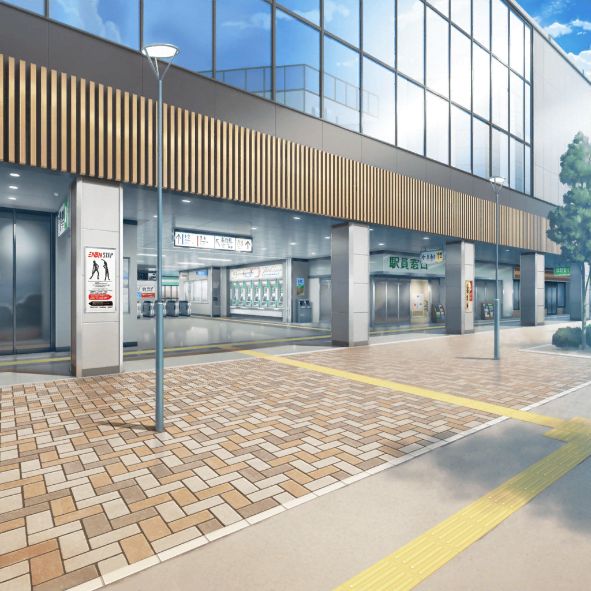

水族館最寄り駅 構外
花音
……はぁ……はぁ。
ここは、人通りもちょっと少ないから大丈夫かな？
どう、ペンギンさん？
ペンギン
キュキュゥゥゥゥ～
花音
は～、良かった……
ちょっと落ち着いたみたいだね？
ペンギン
キュゥゥゥ～
花音
ごめんね、急に抱っこして走っちゃったからビックリしたよね？
けど、あのままだと、どんどん人が
集まって来そうだったから……
花音
ペンギンさん、人間がちょっと怖いのかな？
ちょっと震えてたもんね……？
花音
はぐみちゃんとかこころちゃんが言ってたけど……
ペンギンさんのこと、なんか他人に思えなくて。
私も人前がちょっと苦手だから……
ペンギン
キュゥゥゥ……
花音
……あ、あれ？ 他のみんなは……？
……え？
ここって……どこ？
花音
ふえぇ……
夢中で走ったら、どこにいるのか
わからなくなっちゃった……
花音
……あ、美咲ちゃんから電話だ
花音
……はいもしもし、美咲ちゃん？

水族館最寄り駅 構内
美咲
……花音さん。
ちょっとどこ行っちゃったんですかー？
美咲
すぐに花音さんを追いかけたんだけど、
人混みで、全然見えなくなっちゃって。
……え？ 今、駅の外にいるんですか？
こころ
美咲、ちょっと代わって！
あたし、花音に言わないといけないことがあるの！
美咲
あっ！
こころ……っ！
こころ
花音！ あなたの走り、とってもステキだったわ！
人混みをスルスルとすり抜ける姿は、
まるで忍者のように見えたもの！
こころ
あたし、きっと花音って、忍者の末裔だと思うの！
こころ
はい！
ありがとね美咲！
美咲
……そ、それっ！？
それは、絶対に今言わなきゃいけなかったっ！？
美咲
……あ、花音さん、なんかすみません！
とんだジャマが入っちゃいましたっ！
美咲
今、花音さんのところに行くんで、近くに何が見えます？
美咲
え、えっとー……
赤い車は目印にはならないから、何か別のものを……
変わった形のビルとか、変わった看板とか、なんかありません？
美咲
え？ ギターの形をした看板？
……あ！ それならわかったかも！
それじゃあ、その看板の下で集合しましょう！
水族館最寄り駅 構外
花音
……う、うん。
それじゃあ、またあとでね……
花音
……ふぅ、良かった。
これで何とかみんなとは合流できそうだね
花音
あとは、あのギターの看板の下まで行けば大丈夫だからね
花音
ごめんね、ペンギンさん。
私が頼りなくって……
ペンギン
キュゥゥゥ……
花音
……それじゃあ行こっか
花音
えっと、あとはこの路地を進めば、
さっきの看板の下につきそうなんだけど……
花音
あれって……
犬
ワンワンワンワンッ！
ペンギン
キュ、キュ、キュゥゥゥ～ッ！！
花音
よ、よりによってなんでここに
あんな怖そうな犬がいるのぉ～……
犬
ワン！ ワンワンッ！
花音
ふえぇ……
花音
（１回戻って回り道したほうがいいかな？
けど、回り道したら、また迷っちゃうかもしれないし……）
花音
……うんっ！
このまま進もう！
花音
ペンギンさん……
怖いかもしれないけど、ちょっとだけ我慢してね……？
ペンギン
キュ、キュゥゥゥ……ッ
花音
ご、ごめんね、ワンちゃん……
ちょっと、ここを通して、ね……
犬
ウ～、ワンワンワンワンワンワンッ！！！！
花音
きゃっ！！
ペンギン
キュ、キュ、キュゥゥゥッ！
花音
ペ、ペンギンさんっ！
暴れちゃダメだよっ！
余計ワンちゃんが怒っちゃうよっ！
花音
ど、どうしよう……
花音
（こ、こんな時は、勇気の出る合言葉……）
花音
…………ハピネス……ハピィーマジカル……
……ハピネス、ハピィーマジカル！
ハピネスっ！ ハピィーマジカルっ！
花音
……うんっ！
勇気を出さなきゃっ！
花音
い、行くよ、ペンギンさんっ！
ちょっとだけ走るからねっ！
ペンギン
キュ、キュゥゥゥッ！
花音
……えいっ！！